HPE Helion 2.0 Development Platform: Deploying a Node.js Application
Windows, .NET, SQL Server, and IIS are either registered trademarks or trademarks of
Microsoft Corporation in the United States and/or other countries.
This tutorial demonstrates how to deploy a Node.js Application application. For the
purposes of this tutorial, you'll deploy the Hello World application created with the
Node.js Web Application template.
Contents
This tutorial contains the following sections:
Prerequisites
This tutorial requires the following:
- Any edition of Visual Studio 2013, including the Community (free) edition. Visual Studio 2013 Community Edition can be downloaded
here.
- An ALS cluster on an HPE Helion OpenStack or Public Cloud environment. See the Developer QuickStart for information on setting up an ALS cluster on Helion
Public Cloud.
- Node.js tools for Visual Studio 2013: These tools can be installed by doing the following:
- Select Tools, Extensions and Updates
- In the Online panel, select Visual Studio Gallery. Use the search box in the upper right to search for node.js tools.
- In the Node Tools 1.1 RC item, click Install.
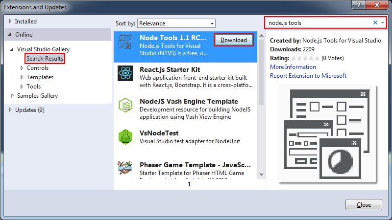
- The tools will download and install. Click I accept the terms in the License Agreement, and click Install.
- Click Finish when the install completes.
- Cloud Foundry Extensions for Visual Studio: These extensions can be installed by doing the following:
- Select Tools, Extensions and Updates
- In the Online panel, select Visual Studio Gallery, use the box in the upper right to search for cloud foundry extensions.
- In the Cloud Foundry Extensions for Visual Studio item, click Install.
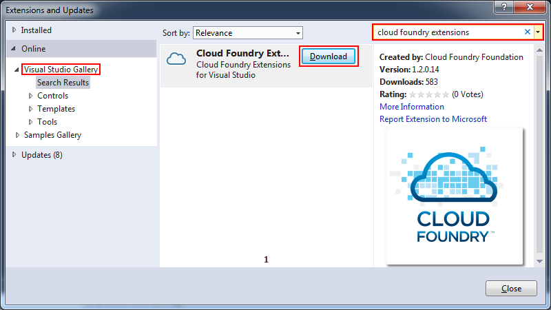
- In the Download and Install window, click Install.
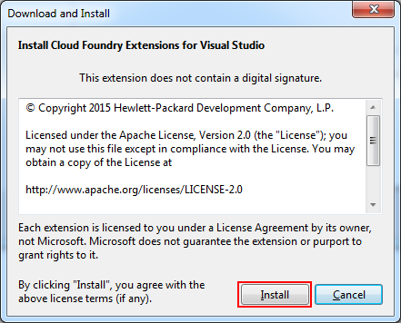
- MSBuild Tasks: This package can be installed through NuGet Package Manager after the project is created (see below).
Creating the Hello World Node.js application
To create the sample application, do the following:
- In Visual Studio 2013, select File, New, Project. In the Templates pane, select Other Languages, JavaScript, Node.js. Select Blank Node.js Web Application, name the
project NodeJSOnHelion, and click OK.
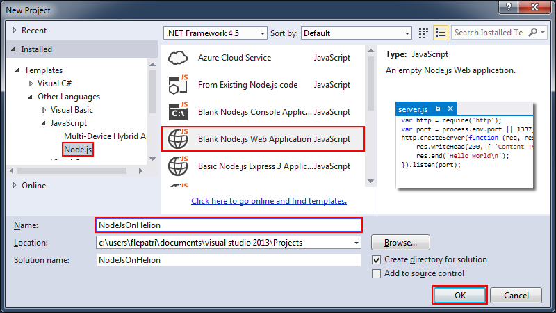
- Deploying the project requires MSBuild Tasks for Cloud Foundry. To install this package, do the following:
- Right-click the solution in Solution Explorer and select Manage NuGet Packages for Solution
- Select Online, and use the upper right box to search for msbuild cloud foundry.
- In the Cloud Foundry MSBuild Tasks item, select Install.
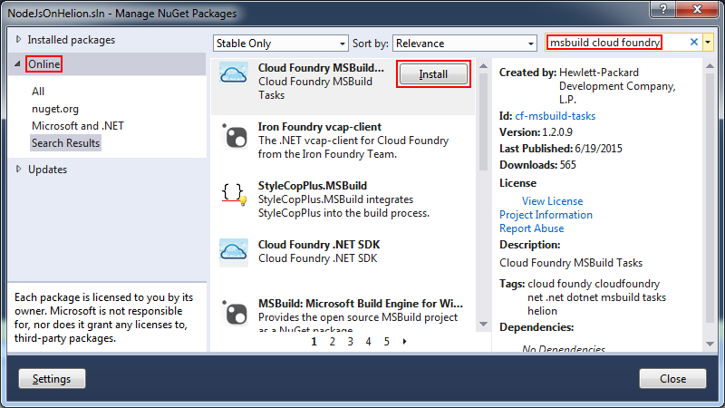
- Open server.js from Solution Explorer. Change the following line:
var port = process.env.port || 1337;
to:
var port = process.env.PORT || 3000;
Deploying the application
To deploy the sample application, do the following:
- Right-click the project and select Publish to Cloud Foundry. If this option does not appear, see Cloud Foundry Extensions under
Prerequisites above.
- In the first Publish to Cloud Foundry dialog, click the ... button in the Target line.
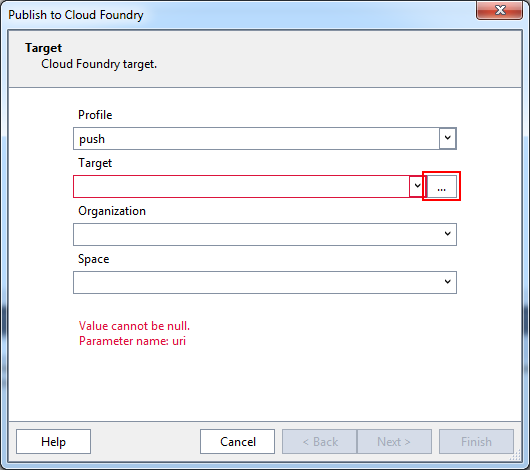
- In the Cloud Foundry target login window, enter the following:
- In the Description field, enter a description for your target environment (e.g. Public Cloud).
- In the Target URL field, enter the address of your ALS cluster, in the format http://api.xx.xx.xx.xx.xip.io.
- In the Username and Password fields, provide the credentials for your cluster.
- Select Skip SSL Validation if your target environment does not use SSL (e.g. Public Cloud).
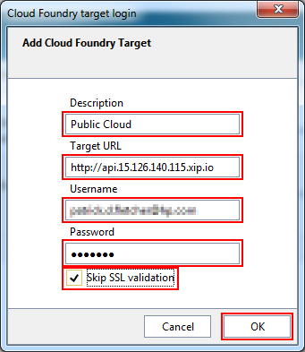
- In the Pulish to Cloud Foundry window, click Next>.
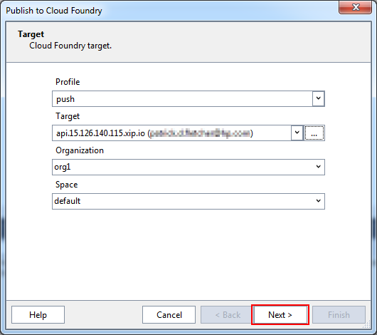
- In the next Publish to Cloud Foundry window, select nodejs from the Buildpack dropdown, and verify that the Stack pulldown is set to lucid64. Click Next>.
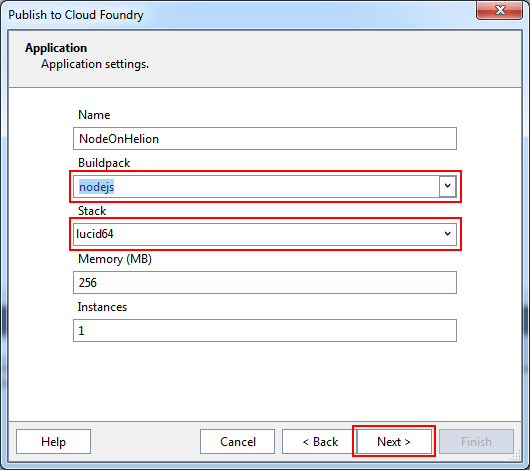
- In the next Publish to Cloud Foundry window, select the target URL in the Shared Domains section and click Next.
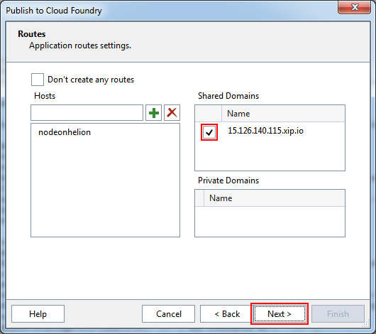
- This sample application does not use any services, so click Next in the next Publish to Cloud Foundry window.
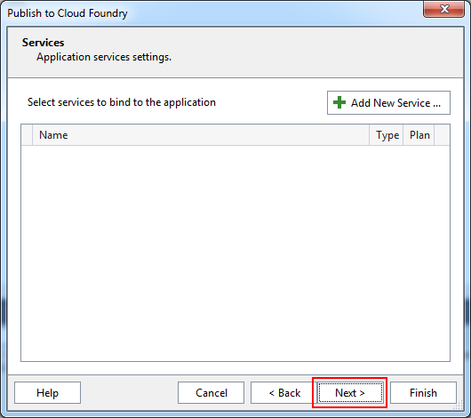
- This sample application does not use any environment variables, so click Finish in the next Publish to Cloud Foundry window.
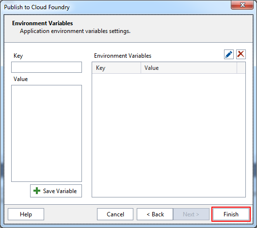
- You can monitor progress of the deployment in the Output pane (select View, Output.)
- When the deployment is complete, navigate to the application URL (e.g. http://nodeonhelion.15.126.140.115.xip.io/) to verify that the deployment succeeded:
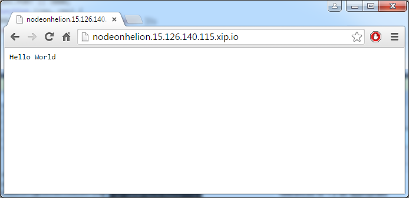